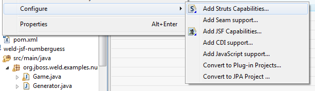

|
To reduce the UI clutter we have started moving most of the "configure project" menu items into the Configure menu introduced in Eclipse 3.5 instead of always have a static JBoss Tools menu entry show up even on non-JBoss Tools related projects.

Related Jira
|